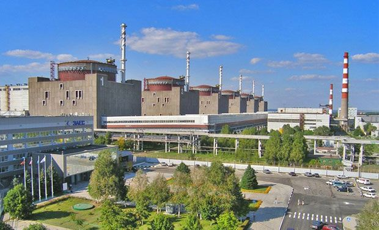
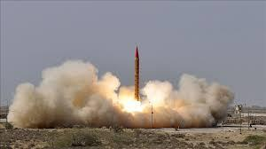

Pakistan’s nuclear program began in the 1950s with the establishment of the **Karachi Nuclear Power Plant (KANUPP)** in 1972. Over the decades, Pakistan’s nuclear power has evolved from a civilian energy program to one of the most powerful nuclear deterrents in the world.
In 1998, Pakistan achieved a significant milestone by conducting nuclear tests at the **Chagai Hills**, asserting Pakistan’s position as a nuclear-armed state. The country’s nuclear energy program continues to grow, with more power plants planned and operational.
Pakistan’s nuclear weapons program was primarily led by **Dr. Abdul Qadeer Khan**, the "father of Pakistan’s nuclear bomb". His work in uranium enrichment and nuclear technology transfer allowed Pakistan to develop its nuclear weapons program.
Pakistan conducted its first nuclear tests on **May 28, 1998**, in the **Chagai Hills** in Balochistan, marking Pakistan’s entry into the group of nuclear-armed states.
Pakistan’s nuclear arsenal includes a variety of missiles capable of delivering nuclear payloads. These include:
Several other countries also possess nuclear capabilities:
Otto Hahn and Fritz Strassmann discovered nuclear fission, which paved the way for nuclear energy.
Pakistan’s first nuclear power plant was launched with Canadian assistance in Karachi.
Pakistan conducted nuclear tests at the Chagai Hills in Balochistan, asserting its nuclear power status.